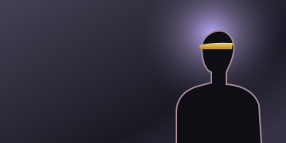
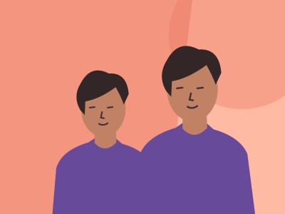

ما برندهایی
میسازیم
که
از یاد نمیروند.

یک استودیو، دوازده ذهن خلاق

از یک ایدهٔ تازه تا هویتی که در ذهن بماند، طراح و نویسنده و تصویرساز کنار هم کار میکنند.
پروژههای منتخب
همهٔ پروژههاچه کار میکنیم؟
نشانه، رنگ و حروفی که لحن برند را شکل میدهند.
نشانه، رنگ و حروفی که لحن برند را شکل میدهند.از معماری اطلاعات تا صفحات واکنشگرا و تجربهٔ کاربر.
از معماری اطلاعات تا صفحات واکنشگرا و تجربهٔ کاربر.تصویر و کلام برای پوستر، شبکههای اجتماعی و فیلم.
تصویر و کلام برای پوستر، شبکههای اجتماعی و فیلم.حرکتهایی که به نشانهها و تصویرها جان میدهند.
حرکتهایی که به نشانهها و تصویرها جان میدهند.آثار استودیو
۱۲۰+هویت طراحیشده
۱۲نفر در استودیو
۱۳۹۳سال آغاز کار
از پروژهات بگو.
تهران، محلهٔ کریمخان
ویربل
تهران، کریمخان
نقشهٔ شماتیک محله؛ ورودی از پیادهروی ضلع شرقی میدان است.
 انتخاب این قالب
انتخاب این قالب